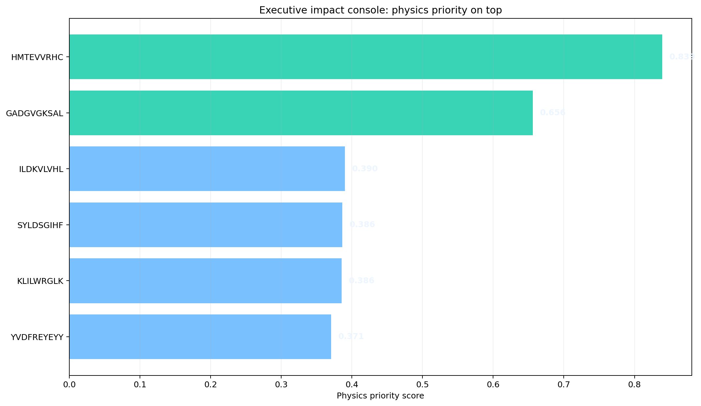

Boundary
This console prioritizes and escalates. It does not prove immunogenicity, activation, killing, or clinical utility.
Impact Figure

Immediate Actions
| peptide | hla 4digit | prediction outcome | main dl score | tcr augmented score mean | paired tcr evidence count | md label | md score | preclinical readiness | physics tier | physics priority score | integrated next action |
|---|---|---|---|---|---|---|---|---|---|---|---|
| HMTEVVRHC | HLA-A*02:01 | TP | 0.467 | 0.983 | 18.000 | MD_VERY_STRONG | 0.822 | 0.935 | P0_FLAGSHIP_PHYSICS | 0.839 | launch WT/decoy-controlled HLA stability + multimer/activation assays |
| GADGVGKSAL | HLA-C*08:02 | TP | 0.770 | 0.960 | 13.000 | MD_MODERATE | 0.617 | 0.797 | P0_FLAGSHIP_PHYSICS | 0.656 | launch WT/decoy-controlled HLA stability + multimer/activation assays |
| ILDKVLVHL | HLA-A*02:01 | TP | 0.773 | 0.962 | 0.000 | NA | NA | NA | P3_NO_PHYSICS_NOW | 0.390 | DL_PRIMARY_SURVIVOR_TCR_CONTEXT_ONLY |
| SYLDSGIHF | HLA-A*24:02 | TP | 0.550 | 0.836 | 0.000 | NA | NA | NA | P3_NO_PHYSICS_NOW | 0.386 | DL_CULL_UNCERTAIN_OR_LOW_POSTERIOR |
| KLILWRGLK | HLA-A*03:01 | TP | 0.803 | 0.985 | 0.000 | NA | NA | NA | P3_NO_PHYSICS_NOW | 0.386 | DL_PRIMARY_SURVIVOR_TCR_CONTEXT_ONLY |
| YVDFREYEYY | HLA-A*01:01 | TP | 0.661 | 0.839 | 0.000 | NA | NA | NA | P3_NO_PHYSICS_NOW | 0.371 | DL_PRIMARY_SURVIVOR_TCR_CONTEXT_ONLY |
Refresh Commands
python project/scripts/cross_neo_md/44_build_executive_impact_console.py python project/scripts/cross_neo_md/43_build_decision_atlas.py python project/scripts/cross_neo_md/42_build_integrated_decision_matrix.py python project/scripts/cross_neo_md/41_build_physics_case_study_board.py python project/scripts/cross_neo_md/38_build_physics_gate_package.py python project/scripts/cross_neo_md/39_build_physics_launch_sheet.py python project/scripts/cross_neo_md/40_build_endpoint_energy_gate.py python project/scripts/cross_neo_md/29_build_high_impact_decision_web.py
Claim Boundary
- Allowed: prioritization, wetlab gating, physics skepticism, assay feedback.
- Not allowed: immunogenicity proof, clinical utility, universal prediction claim.